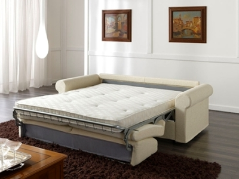

Canapele extensibile pliante | Cumpără online azi - IKEA
 IKEA Produse Camere Noutăţi Idei Oferte speciale IKEA Caută Produse Camere Noutăţi Idei Oferte speciale Profilul meu Urmărește comanda IKEA Family IKEA for Business Livrare Despre magazin Contactează-ne Produse Noutăţi Mobilier Soluţii depozitare Bebeluşi şi copii Mobilier pentru exterior Paturi şi saltele Bucătării şi electrocasnice Accesorii pentru bucătărie şi veselă Produse pentru baie Textile Covoare şi covoraşe Corpuri de iluminat Decoraţiuni Plante şi ghivece Accesorii pentru curățenie și rufe Amenajarea locuinţei Electronice pentru casă Siguranța Mâncare şi băutură Animale de companie Timp liber şi produse pentru siguranţă IKEA home smart Pentru vară Camere Dormitor Camera de zi Bucătărie Sufragerie Camera copiilor Baie Biroul de acasă Hol Exterior Vizualizate recent Schimbă țara Produse Mobilier Paturi Canapele extensibile Canapele extensibileCanapele extensibile
Aflată la dispoziția ta 24 de ore din 24, canapeaua pat este o modalitate grozavă de a ocupa mai puțin spațiu și de a economisi bani. Gama noastră de canapele pat este foarte variată. Găsești canapele din piele sau din material textil, colțare, canapele pat pentru care poți alege salteaua, precum și unele cu huse detașabile, pentru prospețime continuă. Alegerea îți aparține!
Înapoi la început PartajeazăPinterest Facebook Twitter Copiază link-ul